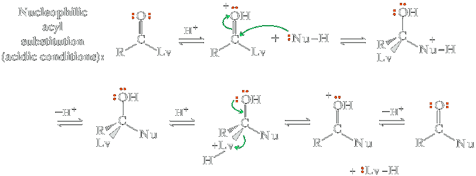
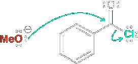
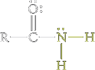

Nucleophilic acyl substitution
Nucleophilic acyl substitution is a reaction in which a nucleophile bonded to the carbon of an acyl group is replaced by another nucleophile: it turns one acyl compound into another.
For functional derivatives of carboxylic acids, the fate of the tetrahedral carbonyl addition intermediate is quite different from that of aldehydes and ketones; the intermediate collapses to expel the leaving group (Lv) and regenerate the carbonyl group (break a bond to give stable molecules or ions). The result of this addition-elimination sequence is nucleophilic acyl substitution.

The major difference between nucleophilic acyl addition and nucleophilic acyl substitution is that aldehydes and ketones do not have a group that can leave as a relatively stable anion. They undergo only nucleophilic addition. The four carboxylic acid derivatives we study in this chapter have a leaving group, Lv, that can leave as a relatively stable anion or as a neutral species. Neutral molecules commonly serve as nucleophiles in this reaction, mainly when it is carried out under acid-catalyzed conditions. When these reactions are catalyzed by acid, protonation precedes nucleophilic attack; similarly, protonation precedes leaving group departure. We will see this sequence numerous times in this chapter.
Nucleophilic substitution reactions occur via a mechanism that involved two core steps - nucleophilic attack and loss of a leaving group. Notice that these are the same two steps involved in an SN2 process. However, there is one important difference. In an SN2 process, the two steps occur in a concerted fashion (simultaneously), but in a nucleophilic acyl substitution reaction, the two steps occur separately.
|  | ↛ | Not a concerted process |
The reaction mechanism cannot be drawn like this because SN2 reactions do not occur readily at sp2-hybridized centers.
The major difference between different types of carbonyl groups is that aldehydes and ketones do not have a group, Y, that can leave as a stable anion. They undergo only nucleophilic acyld addition. The four carboxylic acid derivatives we study in this chapter do have a group, Y, that can leave as a stable anion; accordingly, they undergo nucleophilic acyl substitution. An important point to illustrate is that the weaker the base, the better is the leaving group. The weakest base in this series, and thus the best leaving group, is halide ion; acid halides are the most reactive toward nucleophilic acyl subsitution. The stronges base, and hence the poorest leaving group, is amide ion; amides are the least reactive toward nucleophilic acyl substitution. Acid halides, and acid anhydrides are so reactive that thery are not found in nature. Esters and amides, however, are universally present.

Relative Reactivity
The four carboxylic acid derivatives that are the focus of this chapter have the relative reactivity toward nucleophilic acyl substitution as follows. The differences in this trend are dramatic. For example, at common ambient temperatures and neutral pH, acid halides will react with water within seconds to minutes, while anhydrides will do so over minutes to hours. Esters, however, do not react with water at appreciable rates under these conditions, taking many years to hydrolyze; amides take centuries to react. Hence, acid halides and acid anhydrides are so reactive that they are not found in nature, whereas esters and amides are universally present.
|  Amide | Ester | Anhydride | |
| Increasing reactivity toward nucleophilic acyl substitution ⟶ | |||